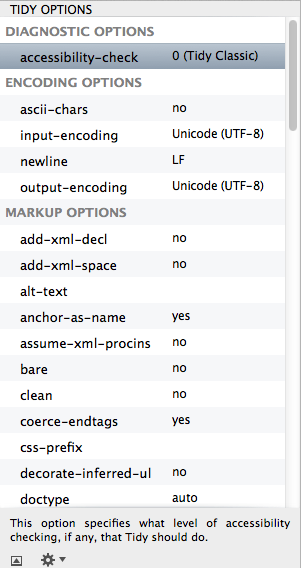
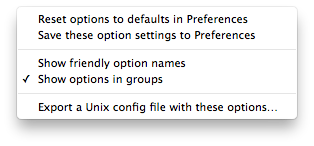

Tidy Options
Balthisar Tidy Tidy’s the text according to a broad set of options which are found in the Tidy Options panel. These options affect how Tidy cleans, corrects errors, formats, and identifies accessability issues in your code.

If you select any of the Tidy options, a description of that option appears at the bottom of the Tidy Options panel.
If you prefer not to see the description (e.g., to save screen space) then you can hide it completely using the show and hide button at the bottom left hand side of the list.
Finally, at the bottom of the options panel is an action button with several choices that can help you work more effectively with Tidy’s options.

- Reset options to defaults in Preferences
- This will change all of the Tidy options in the current document back to the settings that are stored in Preferences.
- Save these option settings to Preferences
- This action will set the Tidy options in Preferences for you.
- Show friendly option names
- This action will toggle the use of friendly option names on and off. Normally Balthisar Tidy displays the Unix Tidy option names so that experienced Tidy users can identify their favorite options right away. When friendly names are enabled, Balthisar Tidy shows more human-friendly names for the options. This is particularly useful if you’re using a non-English version of Balthisar Tidy because the Unix names are English only.
- Show options in groups
- This action toggles between showing Tidy options organized into logical groups or Tidy options sorted in your language’s natural order.
- Export a Unix config file with these options…
- Use this action to export the options in the current window into a file suitable for use with command line Tidy.